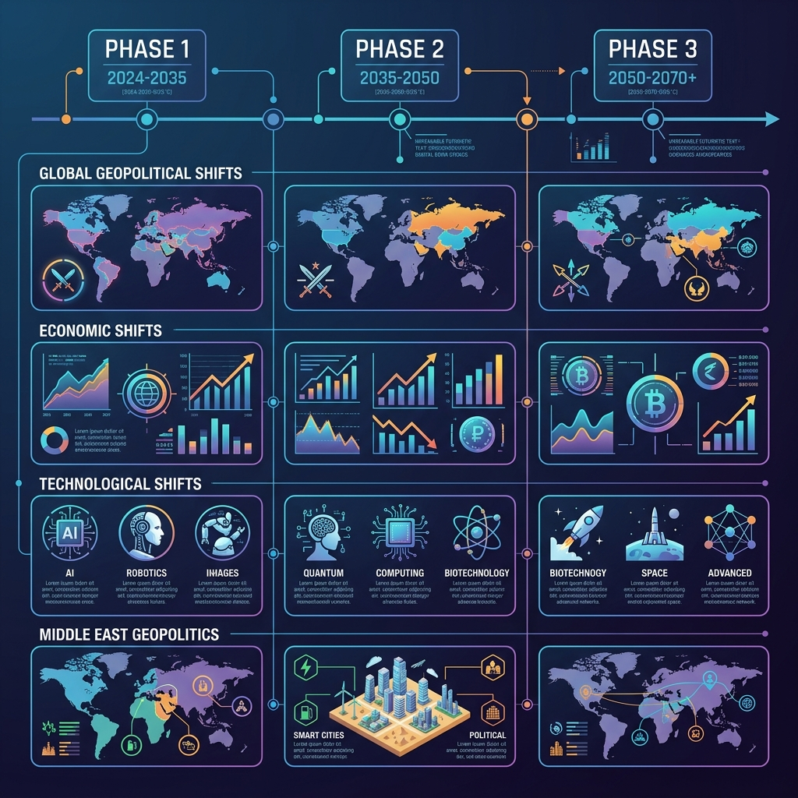
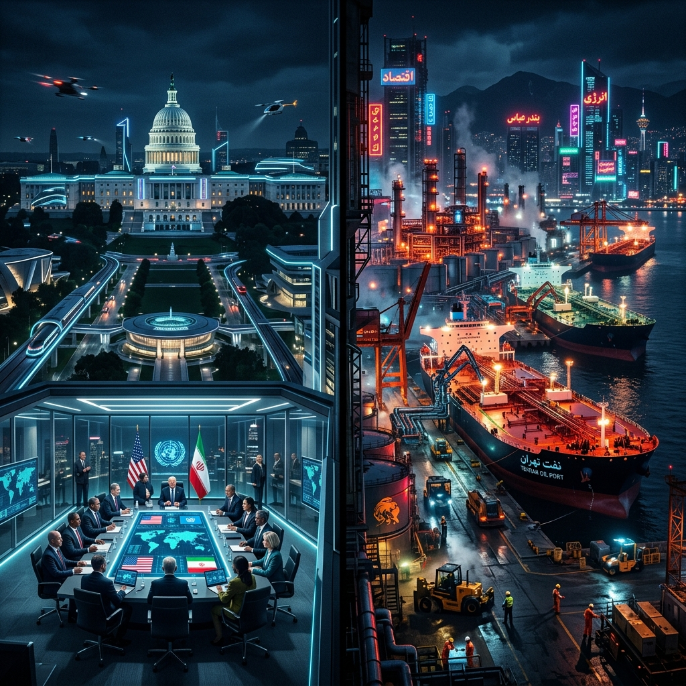
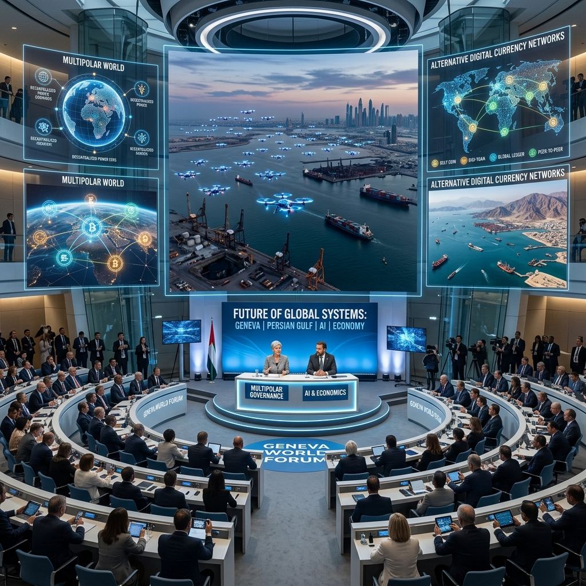
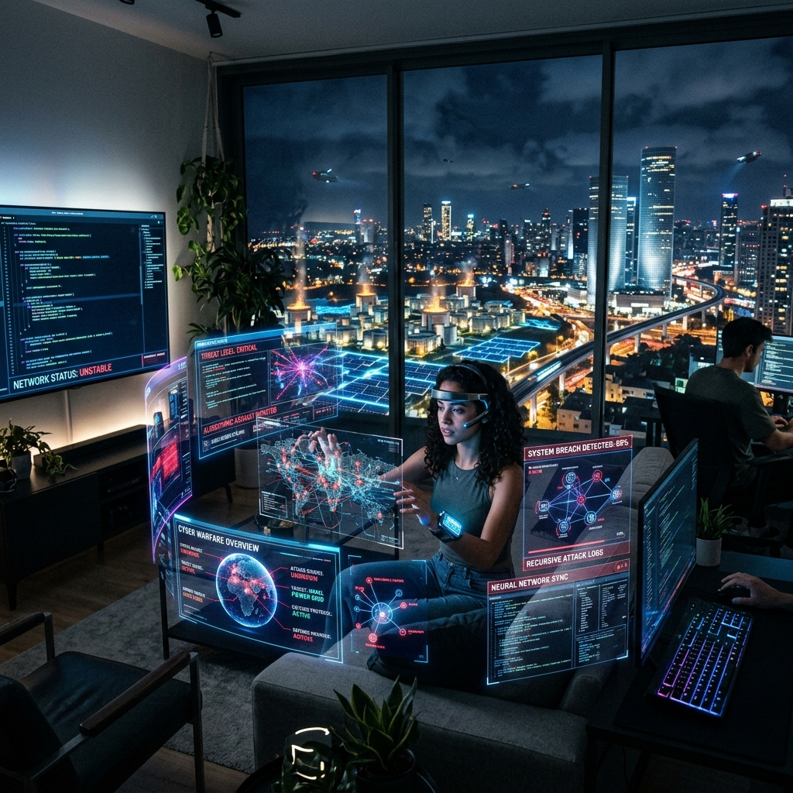

×
❮
❯
2026년 직후, 포스트 트럼프 시대, 그리고 2035년의 미래 시나리오를 7대 영역으로 교차 분석한 리포트.

2026년 6월 미-이란 양해각서(MOU)로 시작된 불완전한 휴전은 중동의 지정학적 지형을 재편하고, 에너지 안보 블록화와 AI 기반 초국가적 감시 체계를 가속화하는 핵심 트리거가 될 것입니다.
'미국 우선주의'의 승리 선언 이면에 권력의 다극화 시작. 사우디-이란 데탕트가 심화되고 역내 질서가 각자도생 형태로 재편됩니다.
유가는 단기 안정화되나, 에너지 무기화 위험으로 탈탄소 및 소형모듈원전(SMR) 전환 가속. 브릭스(BRICS) 주도 탈달러화 본격화.
에너지/식량 자립을 중시하는 생존주의적 커뮤니티 부상. 우파 포퓰리즘과 보호무역을 공고히 하는 심리적 요인으로 작용합니다.
디스토피아, 사이버펑크 장르의 글로벌 유행. 이란 MZ세대를 중심으로 서방의 웹3.0을 결합한 억압 회피형 디지털 서브컬처 탄생.

[검증된 추세]
"2026년 8월 워싱턴 D.C. 펜실베이니아 애비뉴, 트럼프 지지자들이 평화를 환호한다..."
호르무즈 해협 봉쇄가 해제되며 테헤란은 석유 수출선들로 불야성을 이루지만, 지하 벙커에서는 핵 시설 은닉을 위한 긴박한 논의가 오갑니다. 화려한 평화 협정 조인식 이면에서, 시민들은 다음 유가 폭등에 대비해 전기차 구매 대기열에 서 있습니다.
[합리적 추론]
"중동 산유국들은 더 이상 워싱턴의 눈치만 보지 않고 독자적 시스템을 가동한다..."
미국의 신 중동 정책 발표장보다 중국-이란-러시아의 회담장에 시선이 쏠립니다. 브릭스(BRICS)+ 결속이 강화되고, 역내 국가들이 독자 개발한 군집 AI 드론들이 상공을 교차 비행하며 아슬아슬한 힘의 균형을 유지합니다.


[대담한 상상]
"물리적 전면전 공포는 과거가 되고, AI 방공망이 초당 수백만 번의 사이버 교전을 벌인다..."
석유 패권은 쇠퇴하고 SMR과 블록체인 그리드가 생존을 책임집니다. 테헤란의 청년들은 양자 암호화된 메타버스 가상 국가에서 전 세계와 소통합니다. 물리적 국경보다 '디지털 경제 영토'가 진정한 안보가 되는 탈국가적 시대입니다.
파국 모면을 계기로 화석연료 무기화의 병폐를 단절. SMR, 재생에너지, 투명한 AI 갈등 관리 시스템에 집중 투자하여 '비동맹 평화 공존 체제'를 구축합니다.
2026년 휴전은 강대국들의 숨 고르기일 뿐, AI 하이브리드 전쟁 준비 가속. AI 무기 확산으로 국경 초월적 사이버 인프라 테러가 상시화되는 보이지 않는 전시 상태에 빠집니다.
"휴전은 평화의 시작이 아니라,
보이지 않는 디지털 억지력 경쟁의 서막일 뿐입니다."
✅이란-미국-종전이후-미래예측.md